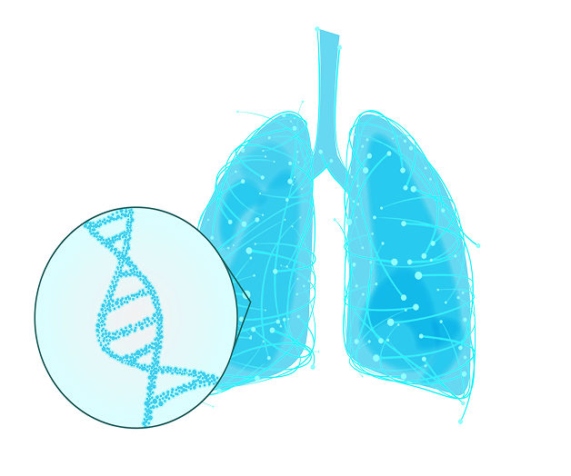
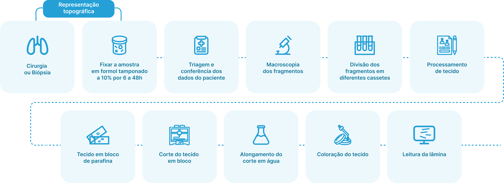
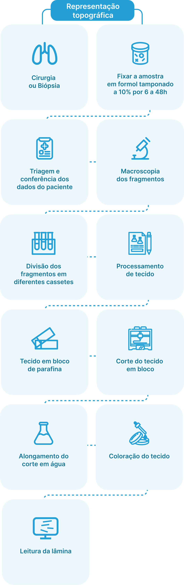
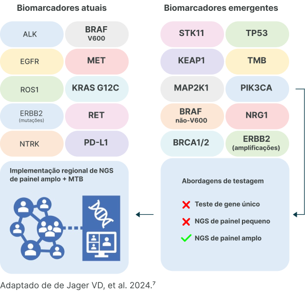
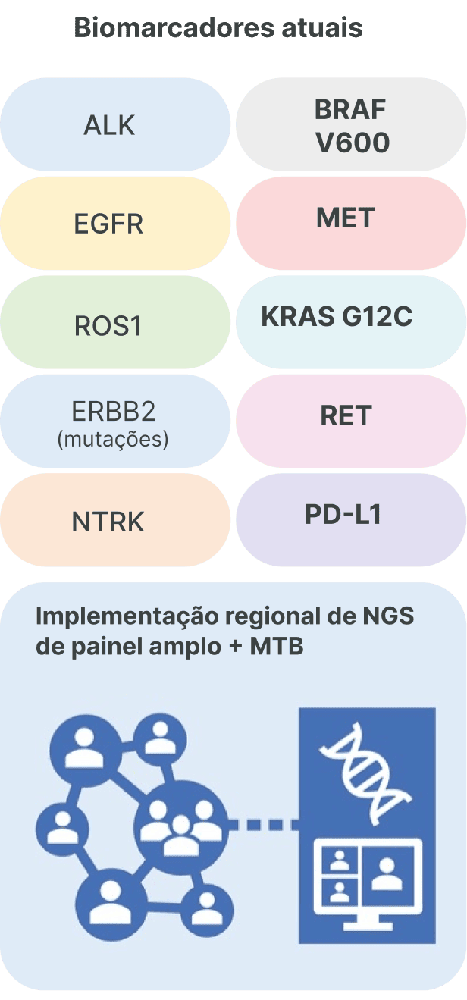
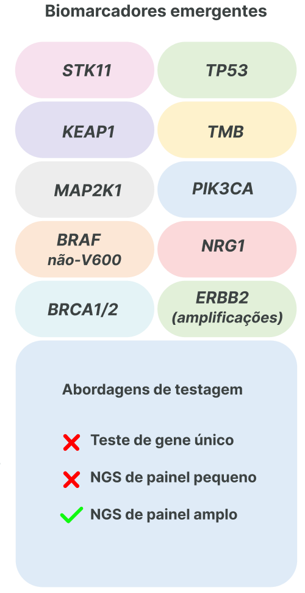
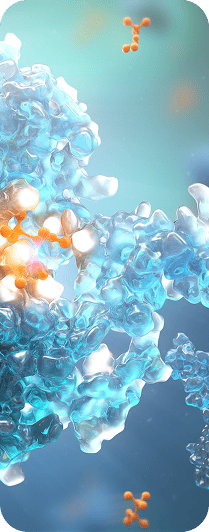
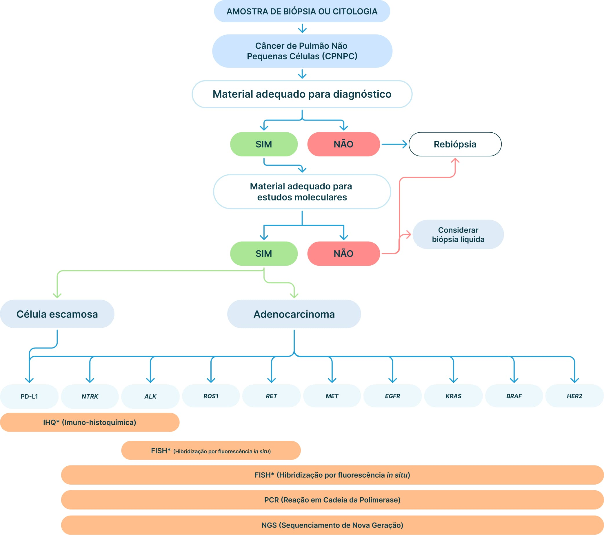
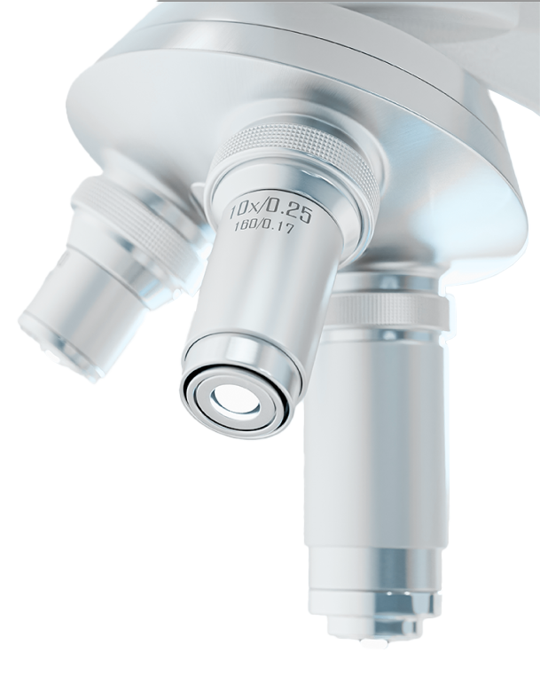

55%
Adenocarcinoma4
O papel essencial da patologia
no diagnóstico de precisão

Nos últimos anos, a medicina de precisão no câncer de pulmão evoluiu de forma impressionante. O diagnóstico e o tratamento ficaram mais complexos, mas também mais eficazes e entender a evolução desse processo se mostra parte essencial da prática diária dos profissionais envolvidos.1,2
Esses marcadores não são usados apenas nos casos avançados. Hoje, eles já ajudam a guiar decisões terapêuticas mesmo em tumores iniciais e localizados, em contextos como a neoadjuvância, o tratamento pós-cirúrgico (adjuvância) e o perioperatório.1,2 Para isso, a patologia precisa integrar dados clínicos, exames de imagem e testes moleculares, o que chamamos de abordagem “ômica”.1,2
Além dos dados clínicos, de imagem e dos detalhes patológicos e de estadiamento, as ferramentas preditivas “Omics” desempenham um papel fundamental na condução personalizada do tratamento, permitindo uma abordagem única e integrada para cada paciente. Isso garante uma medicina de precisão mais eficaz e direcionada ao perfil individual de cada paciente.1,2
Alguns centros têm adotado o conceito de “prioridade molecular”.2 Isso significa seguir à risca os cuidados com a amostra, desde o momento da biópsia até o exame. A amostra precisa ser fixada de forma adequada, analisada com economia de tecido e rapidamente enviada para testes moleculares e sequenciamento.3 Tudo isso precisa ser coordenado pelo patologista para que o laudo final esteja pronto em até 10 dias.2,3


Elaborado a partir de Aisner DL, et al. 20163.
Antes, o câncer de pulmão não pequenas células (CPNPC) era visto como uma doença única. Hoje, sabemos que ele pode ter diferentes tipos, como adenocarcinoma (55%), carcinoma escamoso (34%) e outros (11%),4 e cada um exige uma abordagem diferente.
A subtipagem histológica é fundamental no diagnóstico de câncer de pulmão e o papel do patologista vai além do exame microscópico. Ele deve integrar a morfologia, a imuno-histoquímica e as análises moleculares, tornando a patologia um elemento central no diagnóstico de precisão.3–5
Começa a tomar notoriedade o “patologista de próxima geração”, exercendo papel pivotal na interação da patologia clássica, digital e integrativa, a chamada patologia computacional.3–6
Hoje está cada vez mais estabelecido que, independentemente da histologia, o CPNPC diagnosticado deve seguir com a testagem molecular de acordo com o seu estadiamento clínico.2 Mesmo em tumores ressecáveis, testagens moleculares são fundamentais para a escolha de tratamentos adjuvantes.2
A medicina personalizada no CPNPC começou com os tumores com mutações no gene EGFR, especialmente L858R e as deleções no éxon 19, tratados com inibidores de tirosina-quinase (TKIs). Atualmente, já temos mais de 10 alvos moleculares com alvos terapêuticos na doença avançada: EGFR, ALK, ROS1, BRAF, KRAS G12C, MET, RET, NTRK1/2/3 e ERBB2 (HER2).2



Todos esses potenciais drivers fazem parte de um painel de biomarcadores moleculares que são recomendados a serem testados ao diagnóstico na doença avançada, em conjunto com a pesquisa de expressão de PD-L1 por IHQ. De preferência, deve-se seguir um fluxo de testagem molecular reflexa, ou seja, encaminhar a amostra para a testagem genética ao diagnóstico, permitindo acesso aos laudos com painel completo de biomarcadores preditivos à prescrição inicial.8
Com tantos genes para investigar e pouco tecido disponível, o uso do sequenciamento de nova geração (NGS) se tornou padrão. Ele permite detectar múltiplas mutações com precisão, economizando tempo e material, se consolidando em assegurar a identificação de alvos terapêuticos.9,10
Além dos alvos terapêuticos, o NGS também ajuda a identificar comutações, sobretudo do gene KRAS, com genes como STK11, KEAP1, CDKN2A e TP53 vêm se mostrando associadas à resistência primária à imunoterapia, sobretudo isolada, mesmo em paciente com altos índices de expressão de PD-L1, alertando para risco de menor benefício clínico e para a necessidade de eventuais associações terapêuticas, especialmente quimioterápicas. Além disso, mutações em genes-alvo EGFR e ERBB2 (HER2), fusões ALK, ROS1, RET e alterações no gene MET definem subconjuntos de CPNPC com benefício mínimo à imunoterapia.11–13
Além disso, mutações em genes-alvo EGFR e ERBB2 (HER2), fusões ALK, ROS1, RET e alterações no gene MET definem subconjuntos de CPNPC com benefício mínimo à imunoterapia.13,14 Outros genes também vêm se mostrando papel no cenário de resistência adquirida ao bloqueio de checkpoint imune, entre eles se destacam os genes SMARCA4, ARID1A, ARID2 e ARID1B,15 em conjunto com alterações de número de cópias (CNA).16,17 Com o aumento do número de moléculas a serem testadas na predição de resposta e/ou resistência ao tratamento, o sequenciamento multiplex torna-se ainda mais imprescindível.10
Um outro biomarcador ainda em processo de consolidação para a prática clínica ampla é o TMB (Tumor Mutational Burden), um biomarcador que mede a carga mutacional tumoral. Ele é um possível preditor de resposta à imunoterapia, com linhas de evidência mostrando que a depender do número de mutações por megabase (MB) de DNA sequenciado, seria preditor de resposta à imunoterapia.17 Contudo, o ponto de corte ideal ainda se encontra em definição. Trabalho pivotal indicou o cutoff de TMB≥10 mutações/MB.18 Evidências mais recentes mostram benefícios na adoção de um ponto de corte de até 20 mutações/MB.17–19

Entretanto, mesmo diante do tratamento dos tumores EGFR mutados com TKI de terceira geração, outros mecanismos e genes levam ao desenvolvimento de resistência e progressão ocorre em algum momento.
Entre eles se destacam a amplificação dos genes MET e ERBB2 (HER2), mutações nos genes PIK3CA, BRAF e KRAS, além do resíduo C797X no próprio EGFR. 20 A rebiopsia no cenário de progressão (biópsia tecidual ou líquida) é fundamental para detectar mecanismos de resistência, como transformação histológica de pequenas células ou novas mutações adquiridas (Exemplo: C797X no EGFR).
Novas estratégias terapêuticas vêm sendo desenvolvidas, sobretudo para os tumores com amplificação do MET, baseando-se na detecção da amplificação de alto número de cópias do gene e/ou sua superexpressão.22
Para pacientes com tumores ressecáveis, os biomarcadores continuam sendo fundamentais. É imprescindível definir um perfil molecular mínimo (EGFR e ALK) e de PD-L1 ao diagnóstico, para definir o tratamento ideal.20 Como as amostras são menores, seguir protocolos e economizar tecido é ainda mais importante, pois a qualidade da amostra (biópsia, citologia, células isoladas) impacta diretamente a sensibilidade e especificidade dos testes.2,3,18

Adaptado de Tavora F, et al. 2023.
O “patologista de próxima geração” já vem exercendo papel pivotal na interação da patologia clássica, digital e integrativa, a chamada patologia computacional.5,6
Com o avanço da inteligência artificial, da biologia espacial e da biópsia líquida, o papel do patologista vai muito além do microscópio. Ele será cada vez mais o elo entre o diagnóstico e o tratamento personalizado, analisando dados em tempo real e colaborando com toda a equipe para decisões terapêuticas cada vez mais precisas.23,24

Referências:
Este material é de propriedade exclusiva da AstraZeneca Brasil. A reprodução, distribuição ou qualquer
forma de uso não autorizado do conteúdo aqui apresentado é estritamente proibida. Para obter permissão,
entre em contato com a AstraZeneca Brasil. Todos os direitos reservados.
BR-43883 | Material destinado exclusivamente aos profissionais de saúde habilitados a prescrever ou
dispensar medicamentos. | Setembro/2025